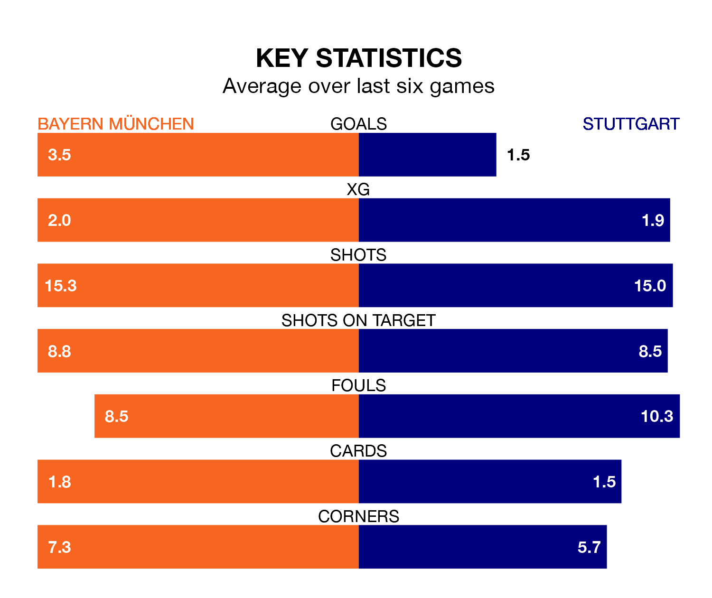

Bayern München host Stuttgart in Sunday's late match at the Allianz Arena looking to bounce back from defeat last time out in the Bundesliga.
Bayern München, who sit second in the league after 13 games, fell to a 5-1 away defeat to Eintracht Frankfurt on December 9.
They face a Stuttgart side who secured a draw in their last match, a 1-1 tie with Bayer Leverkusen, and who sit third in the table.
With 44 goals in 13 games so far this season, Bayern München are the league's highest scorers with 3.4 goals per game. And they are conceding fewer than average, letting in 14 goals at a rate of 1.1 per game.
Stuttgart are also above average scorers, with 2.4 goals per game, compared to a league average of 1.7. They have conceded 1.1 goals per game.
In Harry Kane, the home team have the league's sharpest shooter so far this season. He has notched 18 goals in 13 appearances.
His goal rate of one every 63 minutes is slightly quicker than that of Sehrou Guirassy, the visitors' top scorer with a goal every 55 minutes, and a total of 16 goals in 12 games.
In the last 10 years, Bayern München and Stuttgart have played each other on 16 occasions. Bayern München won 13 of them, Stuttgart one, and they drew twice.
On average, Bayern München scored 2.6 goals and Stuttgart 0.8 in those matches.
Their last meeting was on March 4, when Bayern München won 2-1 away.
Bayern München are in fantastic form in the Bundesliga, with five wins and one loss from their last six games.
With three wins and a draw over that period, Stuttgart's form is worse – they have taken 10 points from 18, compared to Bayern München's 15.
